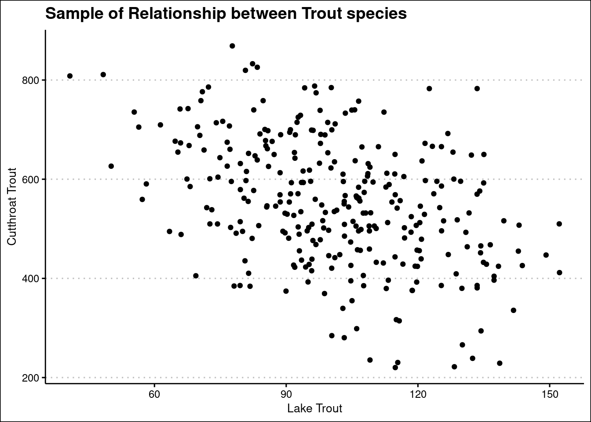
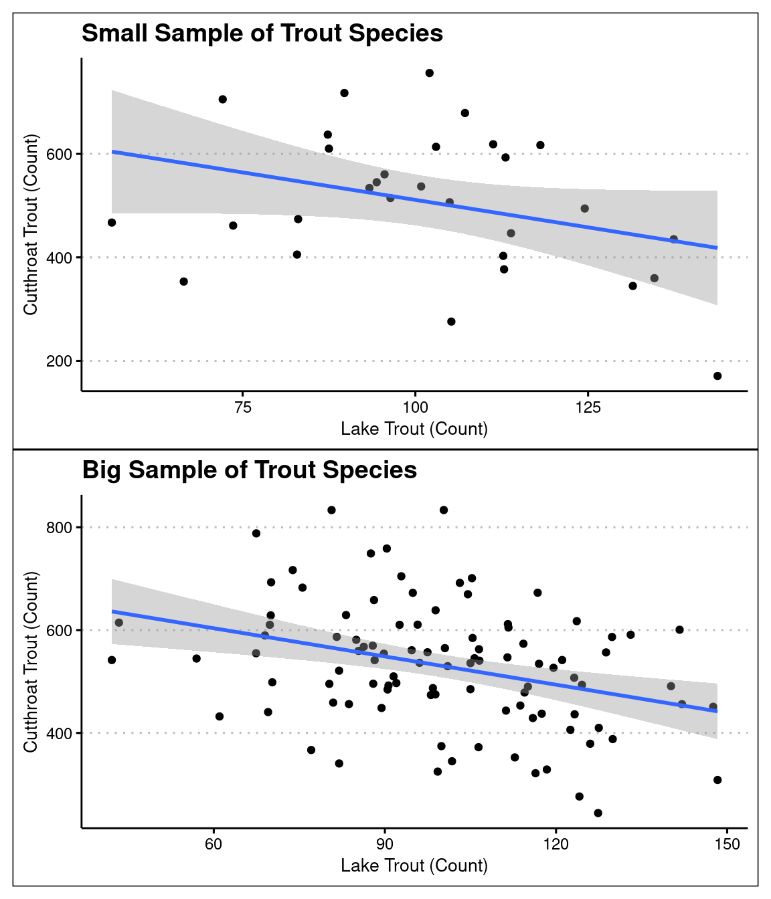

library(tidyverse)
set.seed(123)
theme_set(theme_bw(14))EDS 222: Homework 2
Goals
In this homework you will:
Use simulation to generate samples from a known population.
Apply randomization and mathematical techniques to estimate p-values and confidence intervals.
Visualize the predictions of models with uncertainty.
Create your population and samples
Imagine a fictitious population of lakes. Each lake has both native cutthroat trout and invasive lake trout. Lake trout prey on cutthroat trout, suppressing the abundance of the native species.
Simulate a population of 100,000 lakes. Each lake should have a random number of lake trout in it. In this population, lakes hold an average of 100 lake trout with a standard deviation of 20. Assume the distribution of lake trout is normal. When there are no lake trout, the average lake holds 800 cutthroat trout. On average, each additional lake trout reduces the cutthroat trout population by 2.5. The standard deviation of cutthroat trout in a lake is 120.
From a coding perspective, make your lake population should a data frame with one row per lake and columns for the abundance of lake trout and cutthroat trout. Call this data frame lake_pop. Simulate the population according to the description above, then make a scatter plot showing the relationship between lake and cutthroat trout.
lake_trout <- rnorm(100000, 100, 20)
cutthroat <- rnorm(100000, mean = 800 - 2.5*lake_trout, sd = 120)
trout_sp <- data.frame(lake_trout, cutthroat)trout_sample <- trout_sp[sample(nrow(trout_sp), 300), ]
ggplot(trout_sample, aes(x = lake_trout, y = cutthroat))+
geom_point()+
labs(x = 'Lake Trout',
y = 'Cutthroat Trout',
title = 'Sample of Relationship between Trout species')+
ggthemes::theme_clean()
From this population, draw three samples with 30 observations each. Call them lake_spl1, lake_spl2, and lake_spl3.
What’s the coefficient for the effect of lake trout on cutthroat trout in your population? What is it in each of your three samples?
Use lm() to estimate each of the coefficients.
sample_list <- map(1:3, ~{
assign(paste0('lake_spl',.x), slice_sample(trout_sp, n= 30, replace = FALSE), envir = .GlobalEnv)
})
for (i in seq_along(sample_list)) {
lake_lm <- lm(cutthroat ~ lake_trout, data = sample_list[[i]])
print(paste0('Lake_spl',{i}, ' coefficients are:'))
print(coef(lake_lm))
}[1] "Lake_spl1 coefficients are:"
(Intercept) lake_trout
744.452443 -2.170286
[1] "Lake_spl2 coefficients are:"
(Intercept) lake_trout
864.122683 -3.201993
[1] "Lake_spl3 coefficients are:"
(Intercept) lake_trout
991.984445 -4.464071 pop_lm <- lm(cutthroat ~ lake_trout, data = trout_sp)
print('Population coefficients are:')[1] "Population coefficients are:"print(coef(pop_lm))(Intercept) lake_trout
802.228444 -2.516023 Do lake trout affect cutthroat trout?
In our population of lakes, the abundance of lake trout has a real effect on cutthroat trout. We know this to be true because that’s how we defined the population. But that doesn’t mean that every sample can reject the null hypothesis. By random chance, you just might draw a sample that’s too probable under the null hypothesis to reject.
Failing to reject a null hypothesis when the effect is real is a limitation of small samples. In this part of the homework, you’ll demonstrate that larger samples are more likely to correctly reject the null hypothesis using mathematical models for inference.
Tip
You’ve seen p values in model summary tables. Here’s one highlighted in a model fit to the Palmer penguins data.

That coefficient table, including the p values, is accessible through the model summary object. Here’s an example of how to get the p value for body_mass_g in the model above.
# Fit the model
penguin_model <- lm(flipper_length_mm ~ body_mass_g, penguins)
# Get the model summary
penguin_summary <- summary(penguin_model)
# penguin_summary$coefficients is the coefficient table
penguin_summary$coefficients
# body_mass_g is the second coef (after the intercept) and the p
# value is in the fourth column.
body_mass_g_pval <- penguin_summary$coefficients[2, 4]Write a function called p_dist that takes one parameter, n, representing the size of the sample. Inside p_dist, use map_dbl() to create a vector of 1,000 p values. Generate your p values by doing the following:
- Draw a sample of
nobservations fromlake_pop - Fit a linear model to the sample
- Extract the p-value of the lake trout coefficient
Call p_dist for n’s of 30, 50, and 100. What fraction of the p values are less than 0.05 for each sample size?
p_dist <- function(n){
map_dbl(1:1000, ~{
trout_sample <- trout_sp[sample(nrow(trout_sp), n), ]
trout_lm <- lm(cutthroat ~ lake_trout, trout_sample)
trout_lm_summary <- summary(trout_lm)
trout_coefs <- trout_lm_summary$coefficients[2, 4]
return(trout_coefs)
})
}
n_30_fraction <- sum(p_dist(30) < .05) / length(p_dist(30))
n_50_fraction <- sum(p_dist(50) < .05) / length(p_dist(50))
n_100_fraction <- sum(p_dist(100) < .05) / length(p_dist(100))
print(paste('At n = 30 the sample results in p_values below .05 in', n_30_fraction * 100,'% of the cases'))[1] "At n = 30 the sample results in p_values below .05 in 61.2 % of the cases"print(paste('At n = 50 the sample results in p_values below .05 in', n_50_fraction * 100,'% of the cases'))[1] "At n = 50 the sample results in p_values below .05 in 80 % of the cases"print(paste('At n = 100 the sample results in p_values below .05 in', n_100_fraction * 100,'% of the cases'))[1] "At n = 100 the sample results in p_values below .05 in 98.3 % of the cases"Consider your results in the context of a lake resource manager. This resource manager is trying to decide if increasing lake trout abundances are causing a decline in cutthroat trout. They collect data from thirty lakes, fit a linear model, and find a p value for the coefficient of lake trout of 0.11. The manager says “With a p value this high, I don’t think lake trout are causing the decline.” How would you respond to the manager’s interpretation?
I would respond that the initial interpretation makes sense, however thirty lakes may not be enough to see a full relationship. With sample data we can see that the n(30) leads to roughly half of the p-values being higher than .05.
How much do lake trout affect cutthroat trout?
Now we’ll answer the question “how much do lake trout affect cutthroat trout?” with a confidence interval. This part of the homework will use bootstrapping to estimate the confidence interval for the lake trout coefficient. You’ll repeat this process for both a large and a small sample, comparing how the sample size affects the width of the confidence interval.
In the following code chunk, draw a sample from lake_pop with 100 observations in it. Call it big_sample. Use map_dbl() to make a vector called big_boot with 1,000 bootstrap samples of the lake trout coefficient. Make each bootstrap sample by:
- Draw a sample from
big_samplewith replacement - Fit a linear model to the sample with replacement
- Return the lake trout coefficient
Use the quantile() function on big_boot to construct the 95% CI of the lake trout coefficient.
Then, repeat this process for a smaller sample size. Draw small_sample with 30 observations, use it to make small_boot, and construct the 95% CI of the lake trout coefficient.
Compare the CIs for the two samples. How did the width of the CI change from the large to the small sample?
big_sample <- trout_sp[sample(nrow(trout_sp), 100), ]
big_boot <- map_dbl(1:1000, function(i){
boot_sample = sample(nrow(big_sample), 100, replace = TRUE)
one_boot <- big_sample[boot_sample, ]
trout_lm <- lm(cutthroat ~ lake_trout, one_boot)
trout_lm_summary <- summary(trout_lm)
trout_coefs <- trout_lm_summary$coefficients[2, 1]
return(trout_coefs)
})
small_sample <- trout_sp[sample(nrow(trout_sp), 30), ]
small_boot <- map_dbl(1:1000, function(i){
boot_sample = sample(nrow(big_sample), 30, replace = TRUE)
one_boot <- big_sample[boot_sample, ]
trout_lm <- lm(cutthroat ~ lake_trout, one_boot)
trout_lm_summary <- summary(trout_lm)
trout_coefs <- trout_lm_summary$coefficients[2, 1]
return(trout_coefs)
})
print('The 95% ci for the n_100 bootstrap is between: ')[1] "The 95% ci for the n_100 bootstrap is between: "print(paste(quantile(big_boot, probs = .025),'and', quantile(big_boot, probs = .975)))[1] "-2.78941721243861 and -0.965114904258745"print('The 95% ci for the n_30 bootstrap is between: ')[1] "The 95% ci for the n_30 bootstrap is between: "print(paste(quantile(small_boot, probs = .025),'and', quantile(small_boot, probs = .975)))[1] "-3.96710127918052 and -0.0638454448170035"print('The widths of the two sample 95% CI are:')[1] "The widths of the two sample 95% CI are:"print(paste0('Big: ',
quantile(big_boot, probs = .975)- quantile(big_boot, probs = .025)))[1] "Big: 1.82430230817987"print(paste0('Small: ',
quantile(small_boot, probs = .975) - quantile(small_boot, probs = .025)))[1] "Small: 3.90325583436352"Visualizing the effect of lake trout on cutthroat
In the final part of this homework, you’ll visualize the CI of the response (cutthroat trout) with respect to the predictor (lake trout). This CI provides an informative view of the uncertainty in the sample, because it integrates the potential sampling error in both coefficients and the variation in the predictor. Consider the following question:
“What’s the average cutthroat abundance in a lake with 80 lake trout?”
The CIs of the coefficients alone are insufficient to provide a useful answer. But the CI of the response provides exactly that.
We will build the CI of the response manually when we get to more complex models in the next theme of the course. For now, you’ll use geom_smooth() as a shortcut, and focus on interpretation of the figure. geom_smooth() takes three parameters relevant to this CI:
methodspecifies what model to use. Set it to"lm"to tell it to use a linear model.formulaspecifies the model formula. Set it toy ~ xto tell it we’re using 1 predictor and response.sespecifies whether to display the CI of the response. Set it toTRUE.
Plot big_sample as a scatter plot. Add the best fit line and CI of the response using geom_smooth(). Repeat the process for small_sample. Use the plots to answer the following questions.
library(patchwork)
big_sample_plot <- ggplot(big_sample, aes(lake_trout, cutthroat))+
geom_point()+
geom_smooth(method = 'lm', formula = y~x, se = TRUE)+
labs( x= 'Lake Trout (Count)',
y = 'Cutthroat Trout (Count)',
title = 'Big Sample of Trout Species')+
ggthemes::theme_clean()
small_sample_plot <- ggplot(small_sample, aes(lake_trout, cutthroat))+
geom_point()+
geom_smooth(method = 'lm', formula = y~x, se = TRUE)+
labs( x= 'Lake Trout (Count)',
y = 'Cutthroat Trout (Count)',
title = 'Small Sample of Trout Species')+
ggthemes::theme_clean()
small_sample_plot/big_sample_plot
What is the expected (average) abundance of cutthroat trout in a lake with 80 lake trout according to the model fit to the larger sample?
- Visually it is around 590
Same question, but according to the model fit to the smaller sample?
- Visually it is around 580
How wide are the 95% CIs for cutthroat trout abundance in lakes with 80 lake trout in both models?
Big Model: visually the 95% CI is between 570 and 610
Small Model: visually the 95% CI is between 500 and 660
Consider the mean response in the population itself (the “true” mean response). This is the line defined by the population parameters \(\beta_0\) and \(\beta_1\). Are 95% CIs constructed from small sample models more, less, or equally likely to cover the population mean response than large sample models?
- Small sample means are less likely to cover the population mean. The larger quantity of values in the large sample, means more about the model can be explained, leading to the confidence in our population mean with a smaller range.